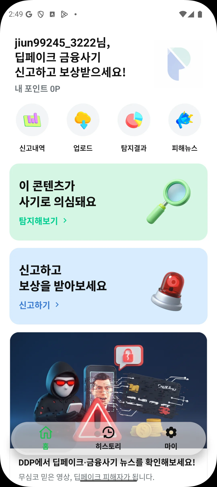
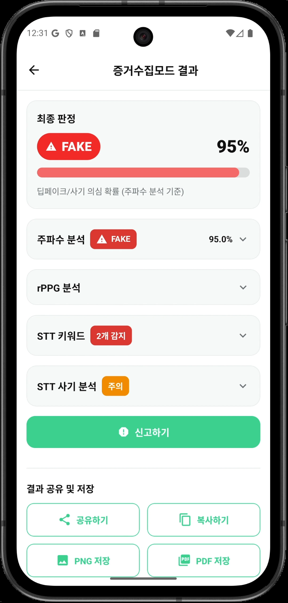
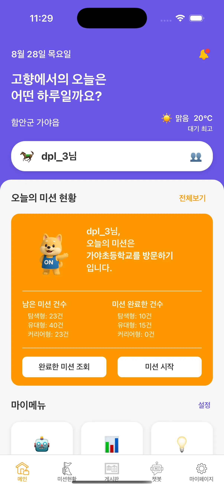
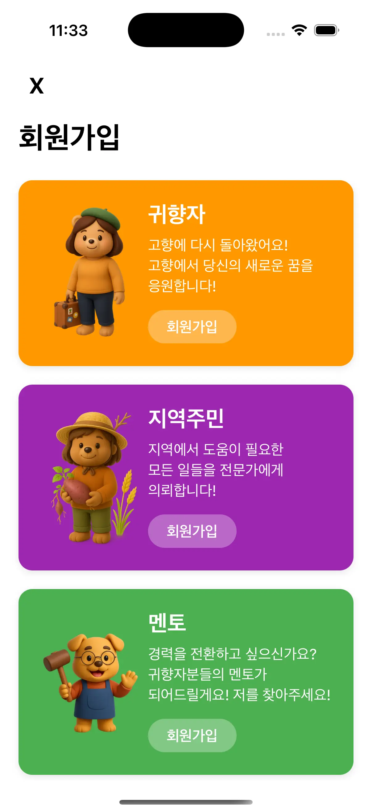
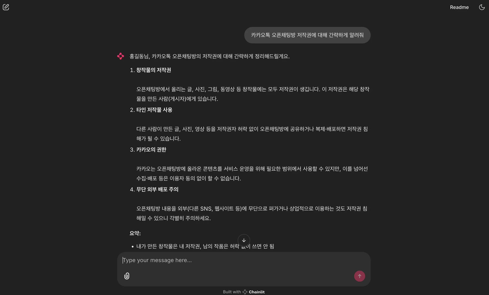
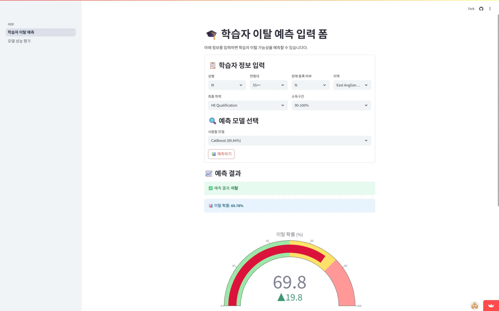

주요 프로젝트 소개
아래 버튼을 클릭하여 프로젝트 유형별로 필터링할 수 있습니다
Game Dev · Unity · 3D Environment Art
EdTech · Realtime AI
+ Fullstack
Multimodal AI
+ Deepfake Detection


Image generation
+ LLM Finetuning
App + RAG 추천시스템



RAG 시스템 + Chainlit
Machine Learning

AI 관련 최신 논문 리뷰 및 세미나 참여 경험
AI 트렌드, 회고록, 개인공부 정리를 위한 블로그
지난 10월에 맞춤형 안정 정책을 지원하는 안전 추론 모델로 gpt-oss-safeguard-120b 와 20b모델을 출시...
How to maintain robust performance in complex interaction environments and expert-level task?
오늘은 같이 프로젝트를 했던 팀들과 AI Festa를 다녀왔다. AI를 다루는 대부분의 기업들이 모두 참석한 행사인만큼 볼거리가 정말 풍성했다...
드디어 최종 프로젝트를 끝으로, 6개월 간의 AI 캠프의 여정이 끝났다. 6개월이라는 길고도 짧은 시간에 정말 많은 부분을 배우고...
fully connected layer는 이미지의 공간적(spatial)구조를 학습하는 것이 어려움. 그니깐, 만약에 강아지 이미지가 있다고 해보자...
1,750억 개의 학습 가능한 파라미터가 있는 GPT-3에서는 full-finetuning 방식을 활용하기엔 시간적 혹은 비용적 측면에서 힘들어지고 있다...
간략한 소개 및 스킬
AI Engineer · LLM & RAG Product Builder
데이터 기반 문제 정의부터 배포까지의 전 과정을 설계하며, 사용자 경험과 정확도를 동시에 높이는 AI 솔루션을 만듭니다.
🟦 Programming Languages
⚙ Backend & Frameworks
📚 Machine Learning · Data
🧠 LLM · RAG · Vector DB
🗄 Databases
☁ DevOps & Deployment
🌐 Web Frontend
🔍 Web Automation